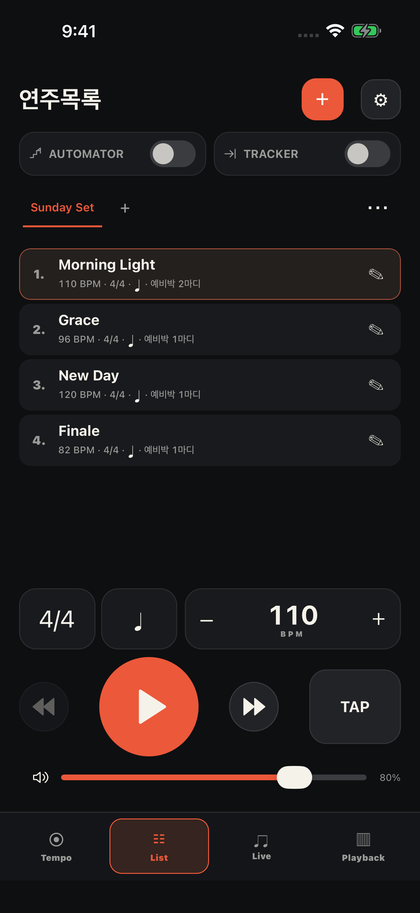
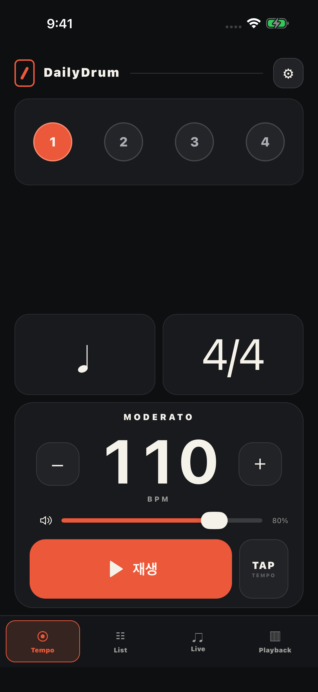
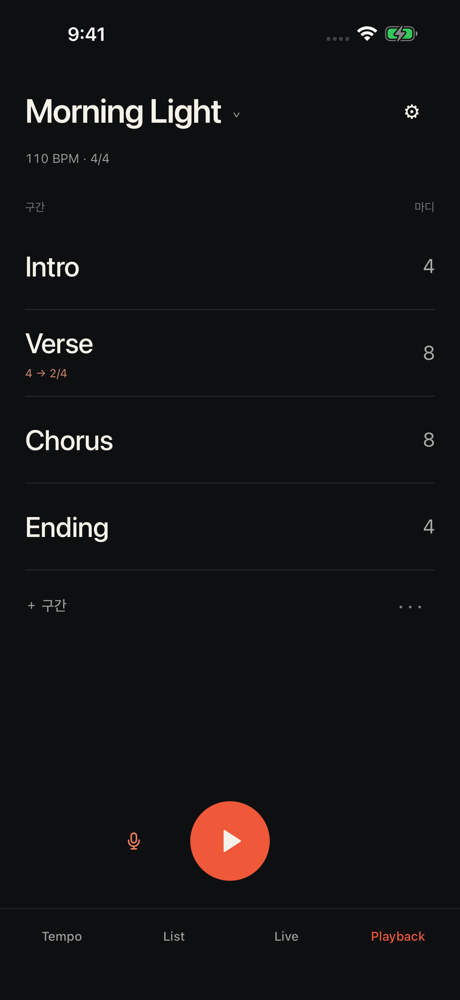
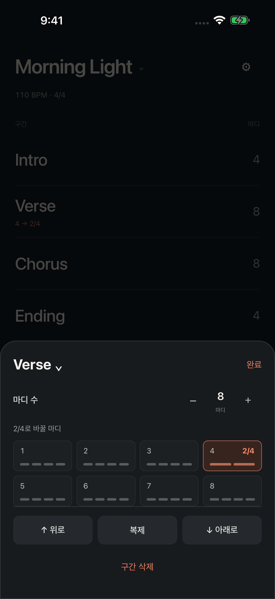
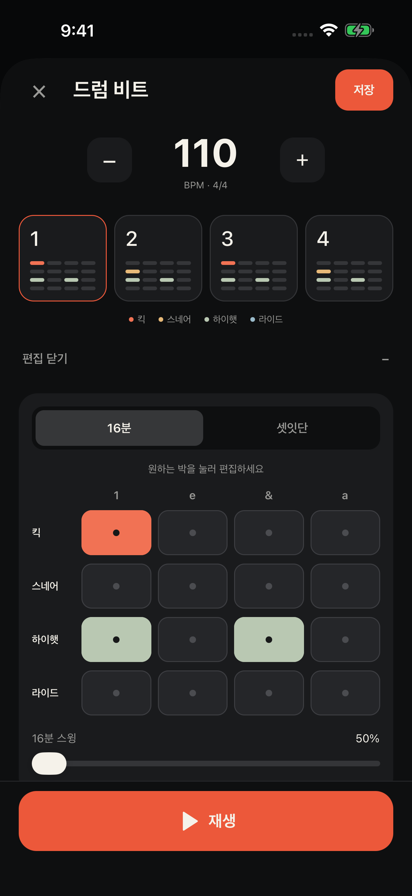
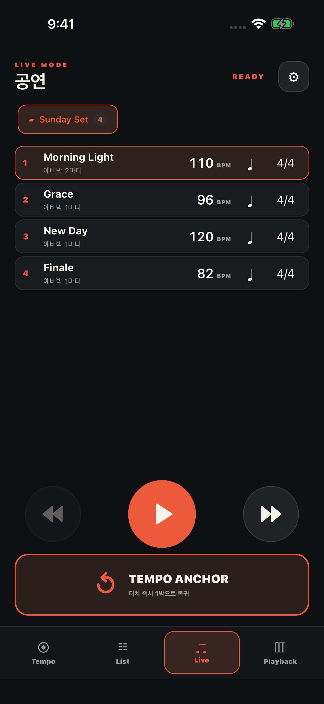
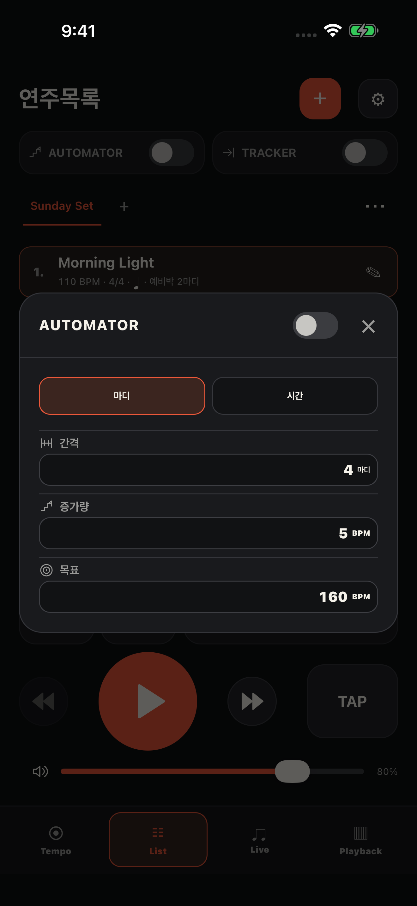
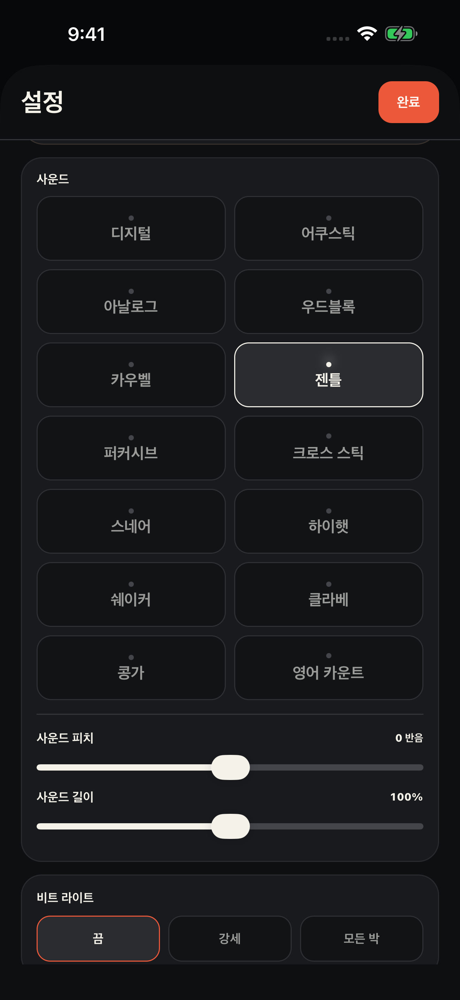

LIST
곡마다 준비하고,
목록째 공유하세요.
BPM·박자표·분할·예비박을 곡별로 저장합니다. 폴더로 정리하고 파일로 보내면, 상대방은 새 목록으로 가져올 수 있습니다.
회원가입 없음 · 실시간 동기화 아님

YOUR RHYTHM. EVERY DAY.
클릭을 맞추고, 그루브를 만들고,
준비한 셋리스트로 무대에 오르세요.
메트로놈 · List · Live · Playback

FROM PRACTICE TO STAGE
박자와 설정은 TEMPO에. 집중은 연주에.
PLAYBACK
Intro · Verse · Chorus · Bridge · Ending. 곡마다 구간과 마디 수를 저장하고, 다음 파트가 오기 전 음성 안내로 준비하세요.
별도 반주 음원을 재생하는 기능이 아닌, 클릭과 구간 안내입니다.

MIXED METER
Verse의 4번째 마디만 2/4로 바꾸면 그 마디만 두 박으로 연주하고, 다음 마디는 다시 4/4로 이어집니다. 구간 전체를 나누어 다시 만들 필요가 없습니다.
구간 누르기 → 2/4로 바꿀 마디 선택 → 완료

DRUM MACHINE
킥·스네어·하이햇·라이드 네 트랙으로 비트를 만드세요. 기본 비트부터 셔플·재즈·보사노바 프리셋까지, 원하는 박을 눌러 패턴을 편집합니다.
숨은 도구: Tempo 탭의 DailyDrum 로고를 빠르게 8번 누르세요.

LIST
BPM·박자표·분할·예비박을 곡별로 저장합니다. 폴더로 정리하고 파일로 보내면, 상대방은 새 목록으로 가져올 수 있습니다.
회원가입 없음 · 실시간 동기화 아님

LIVE
곡을 넘기면 저장한 보이스 예비박으로 준비합니다. 급한 BPM·박자·분할 수정도 화면에서 바로. TEMPO ANCHOR는 선택한 사운드와 첫 박 강세를 유지하며 박자를 다시 맞춥니다.
곡별 예비박 · 큰 조작부 · Live에는 광고 없음

LIST · PRACTICE
List에서 곡 선택과 연습 설정을 함께 조작합니다. 오토메이터는 목표 BPM까지 템포를 바꾸고, 트래커는 정한 마디·시간 후 다음 곡으로 이어갑니다. 켜진 기능의 정보만 간결하게 표시합니다.
마디·시간·타이머 · 필요한 설정은 팝업에서

VOICE & SOUND
기존 영어 보이스에 Bella를 더하고, Digital · Gentle을 새 녹음으로 교체했습니다. Acoustic 사운드도 추가합니다. 첫 타격의 강세 음색을 살리고, 음량·피치·길이와 박별 강세·무음을 조절합니다.
선택한 소리로 TAP · 한국어·영어·일본어·중국어 간체/번체

WHAT'S NEW / 2.5.3
TEMPO PRO · iOS
별도 앱이 아닌, 앱 안에서 한 번 구입하는 업그레이드입니다. 구독이 아닙니다.
한국 스토어 목표 가격 ₩9,900. 실제 결제 금액은 App Store 구입 화면에서 확인하세요. 상품 심사·배포 전에는 구입이 제공되지 않을 수 있습니다.
START FREE
메트로놈·List·Live와 Playback 1곡을 사용합니다. 기존에 저장된 초과 Playback 구성은 삭제하지 않고 보관합니다.
광고는 Tempo와 List의 지정된 배너 영역에만 표시합니다. Live와 Playback에는 광고를 표시하지 않습니다.
설정 → TEMPO PRO → App Store 구입 확인 → 광고 제거·Playback 제한 해제. 재설치했다면 ‘구입 복원’을 선택하세요.
GET TO KNOW TEMPO
기본 조작은 기존 설명서에서 확인할 수 있습니다.
2.5.3의 새 Playback 기능은 위 안내를 참고하세요.
READY FOR YOUR NEXT BEAT?